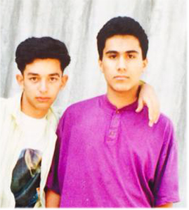

Hello,
We are Amir and Ali, two best friends since first grade passionate about Italian food and pizza. 34 years of friendship is the reason why we called our restaurant Fratelli (or brothers in Italian) .

“Fratelli” is a result of 15 years experience in food industry and love for high quality food. We believe that pizza can be delicious and healthy.
Our goal is to make our customers feel welcomed and appreciated, that’s why in Fratelli you can find a choice for any taste or dietary preference. To become the most loved pizza place in Aarhus we always strive to deliver food of highest quality and aesthetic appeal. .